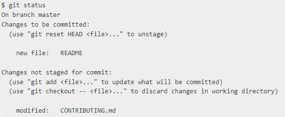
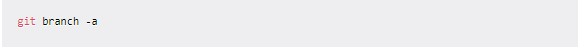
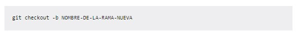
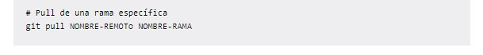
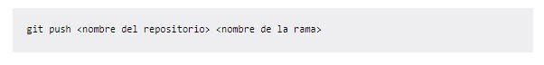
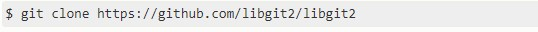
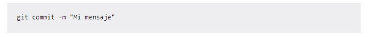

Git
Git es un sistema de versiones distribuido, el cual
nos facilita el trabajo de forma colaborativa, haciendo
óptimo y más sencillo el trabajo en equipo cuando se
está desarrollando software.

INIT
El comando git init crea un nuevo repositorio de Git.
Puede utilizarse para convertir un proyecto existente y sin
versión en un repositorio de Git, o para inicializar un nuevo
repositorio vacío.
Ejemplo:

STATUS
El comando git init crea un nuevo repositorio de Git.
Puede utilizarse para convertir un proyecto existente y sin
versión en un repositorio de Git, o para inicializar un nuevo
repositorio vacío.
Ejemplo:

BRANCH
El comando git branch te permite crear, enumerar y eliminar ramas,
así como cambiar su nombre. No te permite cambiar entre ramas o volver
a unir un historial bifurcado. Por este motivo, git branch está estrechamente
integrado con los comandos git checkout y git merge .
Ejemplo:

CHECKOUT
El comando git checkout te permite desplazarte entre las ramas creadas por git branch .
Al extraer una rama, se actualizan los archivos en el directorio de trabajo para reflejar
la versión almacenada en esa rama y se indica a Git que registre todas las confirmaciones
nuevas en dicha rama.
Ejemplo:

PULL
El comando git pull se emplea para extraer y descargar contenido desde un repositorio
remoto y actualizar al instante el repositorio local para reflejar ese contenido.
La fusión de cambios remotos de nivel superior en tu repositorio local es una tarea
habitual de los flujos de trabajo de colaboración basados en Git.
Ejemplo:

PUSH
El comando git push se usa para cargar contenido del repositorio local a un repositorio remoto.
El envío es la forma de transferir confirmaciones desde tu repositorio local a un repositorio remoto.
Ejemplo:

CLONE
El clon de Git se usa para copiar un repositorio de Git existente en un nuevo directorio local .
El comando de clonación de Git creará un nuevo directorio local para el repositorio, copiará todo el
contenido del repositorio especificado, creará las sucursales remotas rastreadas y extraerá una sucursal
inicial localmente.
Ejemplo:

COMMIT
El comando git commit captura una instantánea de los cambios realizados actualmente en el proyecto .
Las instantáneas comprometidas se pueden considerar como versiones "seguras" de un proyecto: Git nunca las
cambiará a menos que se lo solicite explícitamente.
Ejemplo:
